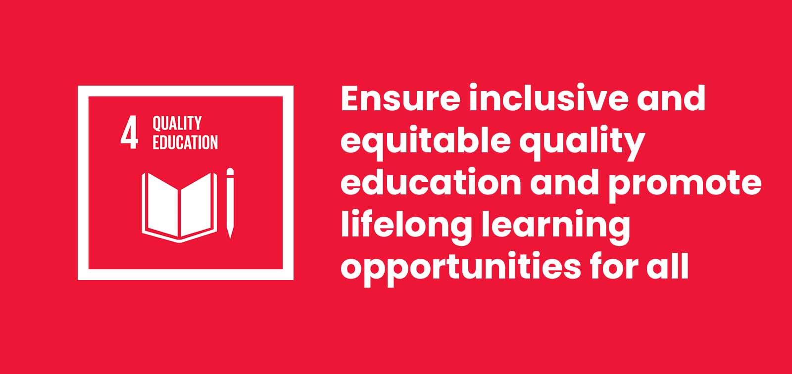

Pages Of Hope, a charity organisation which encourage people to read more books. This organization founded in January 2018. We are providing users more oppotunities to reach more books. We are currently available in Melaka but we aim to expand nationwide. Our organization provide book donation and book purchase in every book centre. Users can look at the book centre available with their location and operating time. Users may also click on a book centre to look at the books available for each book store.
The purpose of organization is to achieve the Sustainable Development Goal 4 (SDG4) which is Quality Education SDG4 is a commitment to "ensure inclusive and equitable quality education and promote lifelong learning opportunities for all." This goal is a pivotal driver for positive change, emphasizing the transformative power of education in fostering a sustainable and equitable world. Some targets that aim to achieve are ensure both boys and girls have access to quality early childhood development, care and pre-primary education, have equitable, quality and free primary and secondary education. It also ensure equal access for all women and men to affordable and quality technical, vocational and tertiary education, including university.